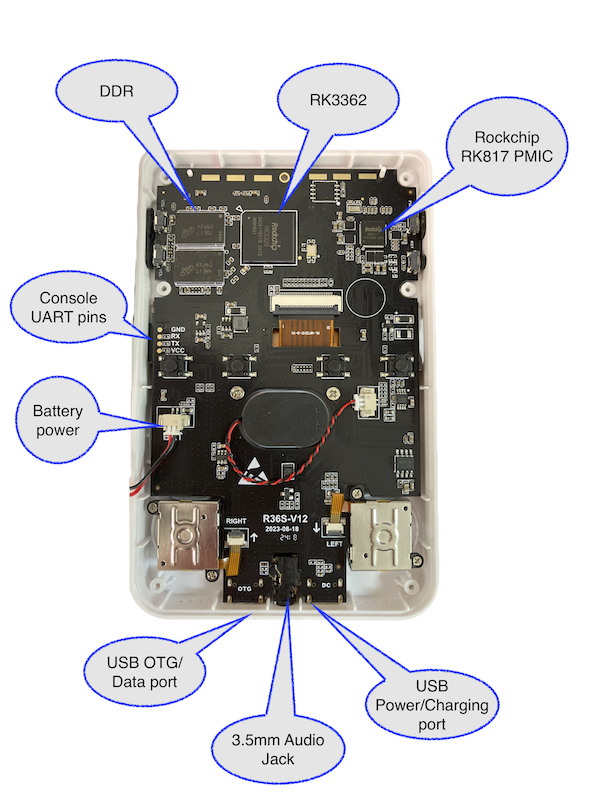

R36S Hacking
 The R36S is a hand-held gaming console available online.
The R36S is a hand-held gaming console available online.
It is designed for use with retro gaming, and there are plenty of resources out there for that.
This page is about re-purposing it as a generic Linux device for custom software - ie: writing & running your
own applications on it.
It has the following basic hardware:
- RK3326 processor
- Quad-core ARM Cortex-A35 CPU (64-bit)
- Up to 1.5GHz
- Datasheet
- 1GB DDR3L
- 640*480 3.5-inch LCD
- 3200 mAh Battery (Replaceable)
- 2x TF/microSD Slot
- 2x USB-C connectors (1x data, 1x charge)
Labeled internal photo

Hardware details
The R36S appears to be very similar to the
ODroid Go Super.
Or the ANBERNIC RG351V
- LCD: Elida KD35T133. DSI attached 640x480 panel. No datasheet available?
- SPI flash: ??
GPIO Assignments
Note: Pins that are using an alternative function may not be listed here yet.
| Bank |
Pin |
Function |
| GPIO0 |
RK_PA3 |
DWMMC Card Detect |
| GPIO0 |
RK_PB3 |
PMIC DC Detect |
| GPIO0 |
RK_PB15 |
PWM0 - Attached to Joypad ? |
| GPIO0 |
RK_PC0 |
PWM1 - LCD Backlight |
| GPIO0 |
RK_PC1 |
Blue Heartbeat LED |
| GPIO1 |
RK_PA2 |
Button A |
| GPIO1 |
RK_PA5 |
Button B |
| GPIO1 |
RK_PA6 |
Button Y |
| GPIO1 |
RK_PA7 |
Button X |
| GPIO1 |
RK_PB4 |
DPad Up |
| GPIO1 |
RK_PB5 |
DPad Down |
| GPIO1 |
RK_PB6 |
DPad Left |
| GPIO1 |
RK_PB7 |
DPad Right |
| GPIO2 |
RK_PA0 |
Button Volume Up |
| GPIO2 |
RK_PA1 |
Button Volume Down |
| GPIO2 |
RK_PA2 |
Button F3 |
| GPIO2 |
RK_PA3 |
Button F4 |
| GPIO2 |
RK_PA4 |
Button F5 |
| GPIO2 |
RK_PA6 |
Button Top Left |
| GPIO2 |
RK_PA7 |
Button Top Right |
| GPIO2 |
RK_PB5 |
PMIC Battery Low Detect |
| GPIO2 |
RK_PC6 |
Headphone Detect |
| GPIO3 |
RK_PB0 |
Joypad AMux-B |
| GPIO3 |
RK_PB1 |
Button F1 |
| GPIO3 |
RK_PB2 |
Button Top Left 2 |
| GPIO3 |
RK_PB3 |
Joypad AMux-A |
| GPIO3 |
RK_PB4 |
Button F2 |
| GPIO3 |
RK_PB5 |
Joypad AMux Enable |
| GPIO3 |
RK_PB6 |
DWMMC (2)? Card Detect |
| GPIO3 |
RK_PB7 |
Button Top Right 2 |
| GPIO3 |
RK_PC0 |
LCD Reset |
Initial Console Output
Using the off-the-shelf firmware, the following output is observed on the console. Note: The initial boot, up to
the end of BL31 is at 1.5MBaud, which flips to 115200 once U-Boot starts
DDR Version 1.10 20181114
DDR3
333MHz
BW=32 Col=10 Bk=8 CS0 Row=15 CS=1 Die BW=16 Size=1024MB
OUT
Boot1 Release Time: Jul 18 2018 15:47:49, version: 1.12
chip_id:524b3326_0,0
ChipType = 0x12, 410
mmc2:cmd1,32
emmc reinit
mmc2:cmd1,32
emmc reinit
mmc2:cmd1,32
SdmmcInit=2 1
mmc0:cmd5,32
SdmmcInit=0 0
BootCapSize=0
UserCapSize=59818MB
FwPartOffset=2000 , 0
StorageInit ok = 41235
SecureMode = 0
Secure read PBA: 0x4
Secure read PBA: 0x404
Secure read PBA: 0x804
Secure read PBA: 0xc04
Secure read PBA: 0x1004
SecureInit ret = 0, SecureMode = 0
GPT signature is wrong
LoadTrust Addr:0x4000
No find bl30.bin
Load uboot, ReadLba = 2000
Load OK, addr=0x200000, size=0xfc838
RunBL31 0x10000
\x01NOTICE: BL31: v1.3(debug):1b8f3f9
NOTICE: BL31: Built : 15:17:34, Jul 6 2018
NOTICE: BL31:Rockchip release version: v1.0
INFO: ARM GICv2 driver initialized
INFO: Using opteed sec cpu_context!
INFO: boot cpu mask: 1
INFO: plat_rockchip_pmu_init: pd status f00e
INFO: BL31: Initializing runtime services
INFO: BL31: Initializing BL32
I/TC: console use default uart! console_data.base.pa=0xff160000
I/TC:
I/TC: Start rockchip platform init
I/TC: Rockchip release version: 1.1
I/TC: OP-TEE version: 3.3.0-146-g369430b2 #12 Wed Dec 5 07:40:03 UTC 2018 aarch64
I/TC: Initialized
INFO: BL31: Preparing for EL3 exit to normal world
INFO: Entry point address = 0x200000
INFO: SPSR = 0x3c9
At this point it flips to 115200
U-Boot 2017.09-00048-ge8824042a0-dirty (Oct 07 2021 - 18:03:21 -0400)
Model: Rockchip RK3326 RG351 Series
DRAM: 992 MiB
Sysmem: init
Relocation Offset is: 3dabc000
Using default environment
adc0 (hw rev) 166
Model = rg351mp
RKPARM: Invalid parameter part table
reading rg351mp-kernel.dtb
59129 bytes read in 8 ms (7 MiB/s)
I2c speed: 400000Hz
PMIC: RK8170 (on=0x80, off=0x80)
vdd_logic 1100000 uV
vdd_arm 1100000 uV
*** Warning - bad CRC, using default environment
In: serial
Out: serial
Err: serial
Model: R36S for linux based on Rockchip rk3326
dwmmc@ff370000: 1 (SD)
## Error: "rkimg_bootdev" not defined
Bootdev: mmc 0
rockchip_get_bootdev: Can't find dev_desc!
[Vendor ERROR]:Invalid boot device type(0)
rockchip_get_bootdev: Can't find dev_desc!
[Vendor ERROR]:Invalid boot device type(0)
rockchip_get_bootdev: Can't find dev_desc!
rockchip_get_boot_mode: dev_desc is NULL!
CLK: (sync kernel. arm: enter 600000 KHz, init 600000 KHz, kernel 600000 KHz)
apll 600000 KHz
dpll 664000 KHz
cpll 24000 KHz
npll 1188000 KHz
gpll 1200000 KHz
aclk_bus 200000 KHz
hclk_bus 150000 KHz
pclk_bus 100000 KHz
aclk_peri 200000 KHz
hclk_peri 150000 KHz
pclk_pmu 100000 KHz
Rockchip UBOOT DRM driver version: v1.0.1
Using display timing dts
Detailed mode clock 29000 kHz, flags[8000000a]
H: 0640 0686 0688 0732
V: 0480 0496 0498 0512
bus_format: 100e
final DSI-Link bandwidth: 192 Mbps x 4
reading logo.bmp
921654 bytes read in 43 ms (20.4 MiB/s)
switch to partitions #0, OK
mmc1 is current device
Net: Net Initialization Skipped
No ethernet found.
Hit key to stop autoboot('CTRL+C'): 1 \x08\x08\x08 0
switch to partitions #0, OK
mmc1 is current device
reading boot.ini
953 bytes read in 3 ms (309.6 KiB/s)
## Executing script at 00800800
reading Image
10764296 bytes read in 474 ms (21.7 MiB/s)
reading uInitrd
13194771 bytes read in 577 ms (21.8 MiB/s)
reading rk3326-r35s-linux.dtb
90315 bytes read in 9 ms (9.6 MiB/s)
## Loading init Ramdisk from Legacy Image at 01100000 ...
Image Name: uInitrd
Image Type: ARM Linux RAMDisk Image (gzip compressed)
Data Size: 13194707 Bytes = 12.6 MiB
Load Address: 00000000
Entry Point: 00000000
Verifying Checksum ... OK
## Flattened Device Tree blob at 01f00000
Booting using the fdt blob at 0x1f00000
'reserved-memory' region@110000: addr=110000 size=f0000
Loading Ramdisk to 3101a000, end 31caf5d3 ... OK
Loading Device Tree to 0000000031000000, end 00000000310190ca ... OK
reserve drm-loader-logo offset = 59776
reserve drm-logo mem = 000000003de00000, size = 3325952
Adding bank: 0x00200000 - 0x08400000 (size: 0x08200000)
Adding bank: 0x0a200000 - 0x40000000 (size: 0x35e00000)
Total: 3549.135 ms
Starting kernel ...
[ 0.107070] genirq: Setting trigger mode 8 for irq 170 failed (0xffffff80083703d0)
[ 0.553719] rk-vcodec vpu_combo: failed on clk_get clk_cabac
[ 0.562631] rk-vcodec vpu_combo: could not find power_model node
[ 0.585614] rockchip-drm display-subsystem: failed to bind ff450000.dsi (ops 0xffffff8008874e78): -517
[ 0.598683] panel-simple-dsi ff450000.dsi.0: failed to get power regulator: -517
[ 0.606666] mali ff400000.gpu: Failed to get regulator
[ 0.611844] mali ff400000.gpu: Power control initialization failed
[ 0.673815] rk817-battery rk817-battery: fb_temperature missing!
[ 0.679884] rk817-battery rk817-battery: energy_mode missing!
[ 0.685666] rk817-battery rk817-battery: zero_reserve_dsoc missing!
[ 0.716980] rk817-charger rk817-charger: power_dc2otg missing!
[ 0.722882] rk817-charger rk817-charger: otg5v_suspend_enable missing!
[ 0.753156] rk_tsadcv2_temp_to_code: Invalid conversion table: code=4095, temperature=2147483647
[ 0.783270] cpu cpu0: failed to find power_model node
[ 0.866076] rockchip-dmc dmc: unable to get devfreq-event device : dfi
[ 0.875528] rksfc_base v1.1 2016-01-08
[ 0.889872] rockchip-drm display-subsystem: failed to bind ff450000.dsi (ops 0xffffff8008874e78): -517
[ 0.900207] panel-simple-dsi ff450000.dsi.0: actual backlight_supply exists
[ 0.908258] mali ff400000.gpu: Failed to get leakage
[ 0.918856] rockchip-dmc dmc: Failed to get leakage
[ 0.924511] rockchip-dmc dmc: failed to get vop bandwidth to dmc rate
[ 0.930994] rockchip-dmc dmc: failed to get vop pn to msch rl
[ 0.949838] devfreq dmc: Couldn't update frequency transition information.
[ 0.960190] asoc-simple-card rk817-sound: ASoC: no sink widget found for MIC_IN
[ 0.967530] asoc-simple-card rk817-sound: ASoC: Failed to add route Mic Jack -> direct -> MIC_IN
[ 0.976337] asoc-simple-card rk817-sound: ASoC: no source widget found for HPOL
[ 0.983658] asoc-simple-card rk817-sound: ASoC: Failed to add route HPOL -> direct -> Headphone Jack
[ 0.992799] asoc-simple-card rk817-sound: ASoC: no source widget found for HPOR
[ 1.000116] asoc-simple-card rk817-sound: ASoC: Failed to add route HPOR -> direct -> Headphone Jack
[ 1.011931] get_framebuffer_by_node: failed to get logo,offset
[ 1.017838] rockchip-drm display-subsystem: failed to show loader logo
Original Software Info
Linux version 4.4.189 (dev@rk3326-dev) (gcc version 6.3.1 20170404 (Linaro GCC 6.3-2017.05) ) #3 SMP Wed Oct 13 23:24:26 EDT 2021
U-Boot 2017.09-00048-ge8824042a0-dirty (Oct 07 2021 - 18:03:21 -0400)
Upstream support
TBD - this is still entirely untested
Possible sources:
Build Instructions
All these instructions assume that you are running a relatively recent Debian-based Linux machine on x86_64.
They should work without too many changes on other distributions - your milage may vary.
U-Boot
git clone git@github.com:hardkernel/u-boot.git u-boot-r36s
cd u-boot-r36s
... TBD ...
Linux
# Install the necessary tools on your Linux machine
sudo apt update && sudo apt install device-tree-compiler build-essential gcc git
# We need an older toolchain, so download & enable this one from Linaro
wget "https://releases.linaro.org/components/toolchain/binaries/6.3-2017.05/aarch64-linux-gnu/gcc-linaro-6.3.1-2017.05-x86_64_aarch64-linux-gnu.tar.xz"
tar xf gcc-linaro-6.3.1-2017.05-x86_64_aarch64-linux-gnu.tar.xz
export PATH=$PWD/gcc-linaro-6.3.1-2017.05-x86_64_aarch64-linux-gnu/bin:$PATH
# Grab the Linux kernel & buildt he images
git clone git@github.com:hardkernel/linux.git -b odroidgoA-4.4.y linux-r36s # This will take a while
cd linux-r36s
sed -i '/^YYLTYPE yylloc;$/d' ./scripts/dtc/dtc-lexer.l # This is to fix a bug in the older kernel when using newer tools
sed -i 's/YYLTYPE yylloc;/extern YYLTYPE yylloc;/' scripts/dtc/dtc-lexer.lex.c_shipped
ARCH=arm64 CROSS_COMPILE=aarch64-linux-gnu- make odroidgoa_defconfig
ARCH=arm64 CROSS_COMPILE=aarch64-linux-gnu- make Image dtbs -j$(nproc)
At this point, the Image and arch/arm64/boot/dts/xxx files should be present
Buildroot
TBD
Booting the new images
TBD